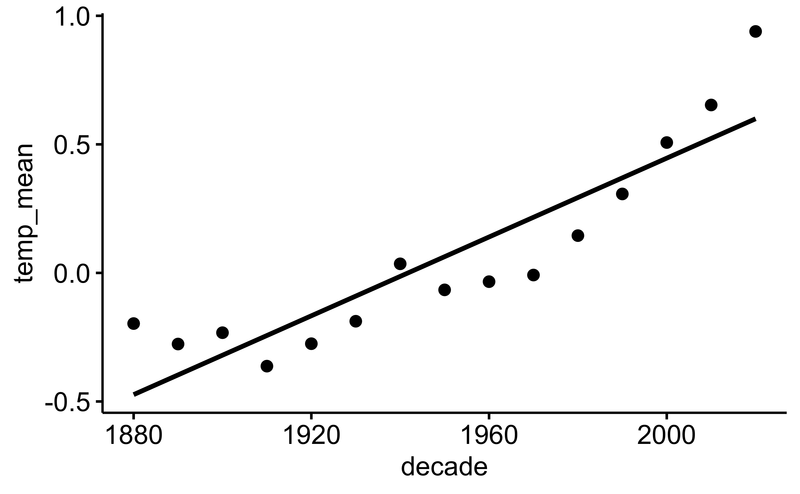
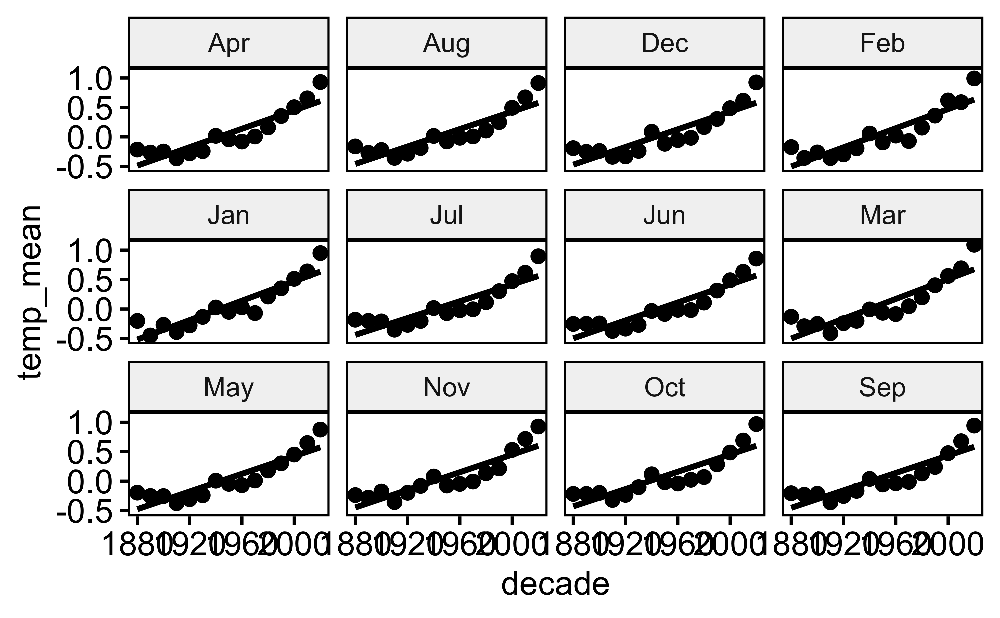

library(tidyverse)Aufgabe
Viele Quellen berichten Klimadaten unserer Erde, z.B. auch National Aeronautics and Space Administration - Goddard Institute for Space Studies.
Von dieser Quelle beziehen wir diesen Datensatz.
Die Datensatz sind auf der Webseite wie folgt beschrieben:
Tables of Global and Hemispheric Monthly Means and Zonal Annual Means
Combined Land-Surface Air and Sea-Surface Water Temperature Anomalies (Land-Ocean Temperature Index, L-OTI)
The following are plain-text files in tabular format of temperature anomalies, i.e. deviations from the corresponding 1951-1980 means.
Global-mean monthly, seasonal, and annual means, 1880-present, updated through most recent month: TXT, CSV
Starten Sie zunächst das R-Paket tidyverse falls noch nicht geschehen.
Importieren Sie dann die Daten:
data_path <- "https://data.giss.nasa.gov/gistemp/tabledata_v4/GLB.Ts+dSST.csv"
d <- read_csv(data_path, skip = 1)Wir lassen die 1. Zeile des Datensatzes aus (Argument skip), da dort Metadaten stehen, also keine Daten, sondern Informationen (Daten) zu den eigentlichen Daten.
Aufgaben
- Fassen Sie immer 10 Jahre (eine Dekade) an Jahren zusammen.
- Präsentieren Sie gängige Statistiken pro Dekade für alle Monate.
Hinweise:
- Sie müssen zuerst die Dekade als neue Spalte berechnen.
- Treffen Sie Annahmen, wo nötig.
- Beachten Sie die Hinweise.
Lösung
Tabelle in die Lang-Form bringen:
d_long <-
d %>%
select(Year, Jan:Dec) %>%
mutate(across(Jan:Dec, as.numeric)) %>%
pivot_longer(cols = Jan:Dec, values_to = "temp", names_to = "month") Ein Blick in die Tabelle:
head(d_long)# A tibble: 6 × 3
Year month temp
<dbl> <chr> <dbl>
1 1880 Jan -0.18
2 1880 Feb -0.24
3 1880 Mar -0.09
4 1880 Apr -0.16
5 1880 May -0.1
6 1880 Jun -0.22Dekade berechnen:
d_long2 <-
d_long %>%
mutate(decade = round(Year/10) * 10)tail(d_long2) # letzten paar Zeilen der Tabelle "d_long2"# A tibble: 6 × 4
Year month temp decade
<dbl> <chr> <dbl> <dbl>
1 2023 Jul 1.18 2020
2 2023 Aug 1.19 2020
3 2023 Sep 1.47 2020
4 2023 Oct NA 2020
5 2023 Nov NA 2020
6 2023 Dec NA 2020d_summarized <-
d_long2 %>%
group_by(decade, month) %>%
summarise(temp_mean = mean(temp, na.rm = TRUE),
temp_sd = sd(temp, na.rm = TRUE))# A tibble: 6 × 4
# Groups: decade [1]
decade month temp_mean temp_sd
<dbl> <chr> <dbl> <dbl>
1 1880 Apr -0.215 0.174
2 1880 Aug -0.162 0.117
3 1880 Dec -0.192 0.118
4 1880 Feb -0.173 0.188
5 1880 Jan -0.202 0.240
6 1880 Jul -0.182 0.133
Monate zu einem Jahreswert zusammen:
d_summarized2 <-
d_summarized %>%
group_by(decade) %>%
summarise(temp_mean = mean(temp_mean),
temp_sd = sd(temp_sd))
d_summarized2# A tibble: 15 × 3
decade temp_mean temp_sd
<dbl> <dbl> <dbl>
1 1880 -0.197 0.0575
2 1890 -0.277 0.0537
3 1900 -0.232 0.0214
4 1910 -0.363 0.0452
5 1920 -0.275 0.0579
6 1930 -0.188 0.0478
7 1940 0.0354 0.0288
8 1950 -0.0659 0.0350
9 1960 -0.0340 0.0310
10 1970 -0.00824 0.0402
11 1980 0.145 0.0305
12 1990 0.307 0.0236
13 2000 0.507 0.0243
14 2010 0.653 0.0403
15 2020 0.939 0.0433Alternativ können Sie zum Visualisieren der Daten z.B. das Paket ggpubr nutzen:
library(ggpubr)
ggscatter(d_summarized2, x = "decade", y = "temp_mean", add = "reg.line")
Oder auch mit den Facetten pro Monat:
ggscatter(d_summarized, x = "decade", y = "temp_mean", add = "reg.line",
facet.by = "month")
Die weltweilte Temperatur steigt. Bleibt u.a. die Frage, ob eine lineare Funktion angemessen ist, oder ob die Steigung nicht vielleicht prozentual steigt (das wäre eine exponenzielle Steigerung)?
Falls Sie Teile der R-Syntax nicht kennen: Machen Sie sich nichts daraus. 😄
Categories:
- data
- eda
- lagemaße
- string